Answer:
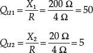
Example 2: What is the unloaded Q of a series-resonant circuit operating at 7.75 MHz, if the bandwidth is 775 kHz?
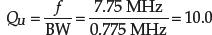
2.30.6 Parallel-Resonant Circuits
Although series-resonant circuits are common, the vast majority of resonant circuits are parallel-resonant circuits. Figure 2.180 shows a typical parallel-resonant circuit. As with series-resonant circuits, the inductor internal coil resistance is the main source of resistive losses, and therefore we put the series resistor in the same leg as the inductor. Unlike the series-resonant circuit whose impedance goes toward a minimum at resonance, the parallel-resonant circuit’s impedance goes to a maximum. For this reason, RLC parallel-resonant circuits are often called antiresonant circuits or rejector circuits. (RLC series-resonant circuits go by the name acceptor). The following example will paint a picture of parallel resonance behavior.
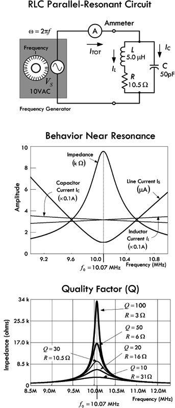
FIGURE 2.180
Example: The impedance of the RLC parallel circuit is found by combining the inductor and resistor in series, and then placing it in parallel with the capacitor (using the impedances in parallel formula):
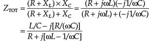
In polar form:
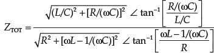
If you plug in L = 5.0 μH and C = 50 pF, R = 10.5 Ω and ω = 2πf, the total impedance, ignoring phase, is:
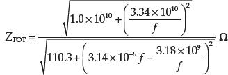
The total current (line current), ignoring phase, is:
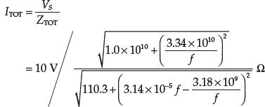
Plugging these equations into a graphing program, you get the curves shown in Fig. 2.180. Note that at a particular frequency, the impedance goes to a maximum, while the total current goes to a minimum. This, however, is not at the point where XL = XC—the point referred to as the resonant frequency in the case of a simple LC parallel circuit or a series RLC circuit. As it turns out, the resonant frequency of a parallel RLC circuit is a bit more complex and can be expressed three possible ways. However, for now, we make an approximation that is expressed as before:
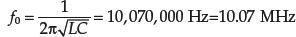
The unloaded Q for this circuit, using the reactance of L, is:
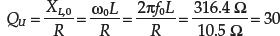
The lower graph in Fig. 2.180 shows the quality factor and how it is influenced by the size of the parallel resistance in the inductor leg.
Unlike the ideal LC parallel resonant circuit we saw in Fig. 2.177, the addition of R changes the conditions of resonance. For example, when the inductive and capacitive reactances are the same, the impedances of the inductive and capacitive legs do not cancel—the resistance in the inductive leg screws things up. When XL = XC, the impedance of the inductive leg is greater than XC and will not be 180° out of phase with XC. The resultant current is not at a true minimum value and is not in phase with the voltage. See line (A) in Fig. 2.181.
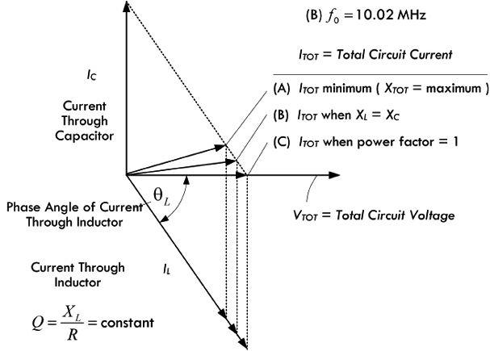
FIGURE 2.181
Now we can alter the value of the inductor a bit (holding Q constant) and get a new frequency where the current reaches a true minimum—something we can accomplish with the help of a current meter. We associate the dip in current at this new frequency with what is termed the standard definition of RLC parallel resonance. The point where minimum current (or maximum impedance) is reached is called the antiresonant point and is not to be confused with the condition where XL = XC. Altering the inductance to achieve minimum current comes at a price; the current becomes somewhat out of phase with the voltage—see line (B) in Fig. 2.181.
It’s possible to alter the circuit design of our RLC parallel-resonant circuit to draw some of the resonant points shown in Fig. 2.181 together—for example, compensating for the resistance of the inductor by altering the capacitance (retuning the capacitor). The difference among the resonant points tends to get smaller and converge to within a percent of the frequency when the circuit Q rises above 10, in which case they can be ignored for practical calculations. Tuning for minimum current will not introduce a sufficiently large phase angle between voltage and current to create circuit difficulties.
As long as we assume Qs higher than 10, we can use a single set of formulas to predict circuit performance. As it turns out, what we end up doing is removing the series inductor resistance in the leg with the inductor and substituting a parallel-equivalent resistor of the actual inductor loss series resistor, as shown in Fig. 2.182.
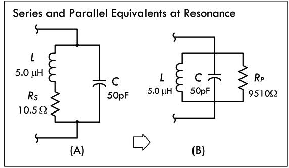
Series and parallel equivalents when both circuits are resonant. Series resistance RS in (a) is replaced by the parallel resistance RP in (b), and vice versa:
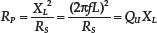
FIGURE 2.182
This parallel-equivalent resistance is often called the dynamic resistance of the parallel-resonant circuit. This resistance is the inverse of the series resistance; as the series resistance value decreases, the parallel-equivalent resistance increases. Alternatively, this means that the parallel-equivalent resistance will increase with circuit Q. We use the following formula to calculate the approximate parallel-equivalent resistance:
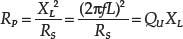
(2.84)
Example: What is the parallel-equivalent resistance for the inductor in Fig. 2.182b, taking the inductive reactance to be 316 Ω and a series resistance to be 10.5 Ω at resonance? Also determine the unloaded Q of the circuit.
Answer:
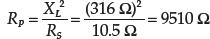
Since the coil QU remains the inductor’s reactance divided by its series resistance, we get:
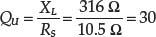
Multiplying QU by the reactance also provides the approximate parallel-equivalent resistance of the inductor’s series resistance.
At resonance, assuming our parallel equivalent representation, XL = XC, and RP now defines the impedance of the parallel-resonant circuit. The reactances just equal each other, leaving the voltage and current in phase with each other. In other words, at resonance, the circuit demonstrates only parallel resistance. Therefore, Eq. 2.84 can be rewritten as:
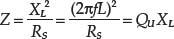
(2.85)
In the preceding example, the circuit impedance at resonance is 9510 Ω.
At frequencies below resonance, the reactance of the inductor is smaller than the reactance of the capacitor, and therefore the current through the inductor will be larger than that through the capacitor. This means that there is only partial cancellation of the two reactive currents, and therefore the line current is larger than the current with resistance alone. Above resonance, things are reversed; more current flows through the capacitor than through the inductor, and again the line current increases above a value larger than the current with resistance alone. At resonance, the current is determined entirely by RP; it will be small if RP is large and large if RP is small.
Since the current rises off resonance, the parallel-resonant-circuit impedance must fall. It also becomes complex, resulting in an increasing phase difference between the voltage and the current. The rate at which the impedance falls is a function of QU. Figure 2.180 presents a family of curves showing the impedance drop from resonance for circuit Qs ranging from 10 to 100. The curve family for parallel-circuit impedance is essentially the same as the curve family for series-circuit current. As with series-tuned circuits, the higher the Q of a parallel-tuned circuit, the sharper the response peak. Likewise, the lower the Q, the wider the band of frequencies to which the circuit responds. Using the half-power (−3-dB) points as a comparative measure of circuit performance, we can apply the same equations for bandwidth for a series-resonant circuit to a parallel-resonant circuit, BW = f/QU. Table 2.11 summarizes performance of parallel-resonant circuits at high and low Qs, above and below resonance.
TABLE 2.11 Performance of Parallel-Resonant Circuits
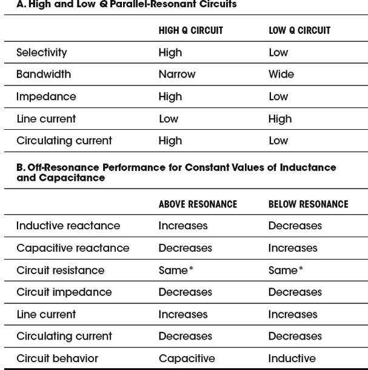
*True near resonance, but far from resonance skin effects within inductor alter the resistive losses.
Note on Circulating Current
When we covered the ideal LC parallel-resonant circuit, we saw that quite a large circulating current could exist between the capacitor and the inductor at resonance, with no line current being drawn from the source. If we consider the more realistic RLC parallel-resonant circuit, we also notice a circulating current at resonance (which, too, can be quite large compared to the source voltage), but now there exists a small line current sourced by the load. This current is attributed to the fact that even though the impedance of the resonant network is high, it isn’t infinite because there are resistive losses as the current circulates through the inductor and capacitor—most of which are attributed to the inductor’s internal resistance.
Taking our example from Fig. 2.183 and using the parallel-equivalent circuit, as shown to the right in Fig. 2.183, we associate the total line current as flowing through the parallel inductor resistance RP. Since the inductor, capacitor, and parallel resistor are all in parallel according to the parallel-equivalent circuit, we can determine the circulating current present between the inductor and capacitor, as well as the total line current now attributed to the parallel resistance:
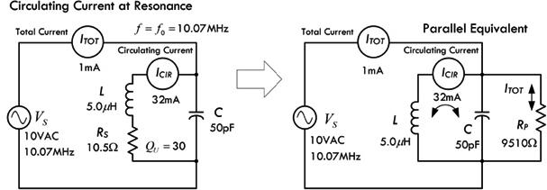
FIGURE 2.183
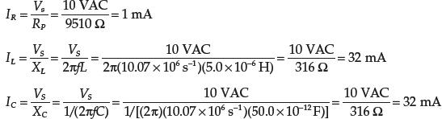
The circuiting current is simply ICIR = IC = IL when the circuit is at the resonant frequency. For parallel-resonant circuits with an unloaded Q of 10 or greater, the circulating current is approximately equal to:
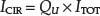
(2.86)
Using our example, if we measure the total line current to be 1 mA, and taking the Q of the circuit to be 30, the approximated circulating current is (30)(1 mA) = 30 mA.
Example: A parallel-resonant circuit permits an ac line current of 50 mA and has a Q of 100. What is the circulating current through the elements?
IC = QU × IT = 100 × 0.05 A = 5 A
Circulating current in high-Q parallel-tuned circuits can reach a level that causes component heating and power loss. Therefore, components should be rated for the anticipated circulating current, and not just for the line currents.
It is possible to use either series-or parallel-resonant circuits to do the same work in many circuits, thus providing flexibility. Figure 2.184 illustrates this by showing both a series-resonant circuit in the signal path and a parallel-resonant circuit shunted from the signal path to ground. Assuming both circuits are resonant at the same frequency f and have the same Q: the series-tuned circuit has its lowest impedance at the resonant frequency, permitting the maximum possible current to flow along the signal path; at all other frequencies, the impedance increases causing a decrease in current. The circuit passes the desired signal and tends to impede signals at undesired frequencies. The parallel circuit, on the other hand, provides the highest impedance at resonance, making the signal path lowest in impedance for the signal; at all frequencies off resonance, the parallel circuit presents a lower impedance, providing signals a route to ground away from the signal path. In theory, the effects displayed for both circuits are the same. However, in actual circuit design, there are many other things to consider, which ultimately determine which circuit is best for a particular application. We will discuss such circuits later, when we cover filter circuits.
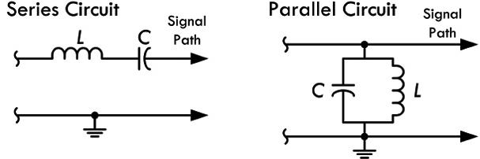
FIGURE 2.184
2.30.7 The Q of Loaded Circuits
In many resonant circuit applications, the only practical power lost is dissipated in the resonant circuit internal resistance. At frequencies below around 30 MHz, most of the internal resistance is within the inductor coil itself. Increasing the number of turns in an inductor coil increases the reactance at a rate that is faster than the accompanying internal resistance of the coil. Inductors used in circuits where high Q is necessary have large inductances.
When a resonant circuit is used to deliver energy to a load, the energy consumed within the resonant circuit is usually insignificant compared to that consumed by the load. For example, in Fig. 2.185, a parallel load resistor RLOAD is attached to a resonant circuit, from which it receives power.
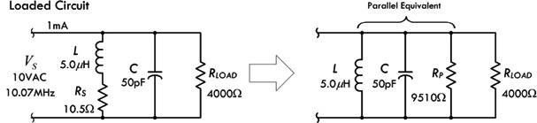
FIGURE 2.185
If the power dissipated by the load is at least 10 times as great as the power lost in the inductor and capacitor, the parallel impedance of the resonant circuit itself will be so high compared with the resistance of the load that for all practical purposes the impedance of the combined circuit is equal to the load impedance. In these circumstances, the load resistance replaces the circuit impedance in calculating Q. The Q of a parallel-resonant circuit loaded by a resistance is:
(2.87)
where QLOAD is the circuit-loaded Q, RLOAD is the parallel load resistance in ohms, and X is the reactance in ohms of either the inductor or the capacitor.
Example 1: A resistive load of 4000 Ω is connected across the resonant circuit shown in Fig. 2.185, where the inductive and capacitive reactances at resonance are 316 Ω. What is the loaded Q for this circuit?
Answer:
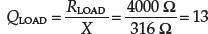
The loaded Q of a circuit increases when the reactances are decreased. When a circuit is loaded with a low resistance (a few kiloohms) it must have low-reactance elements (large capacitance and small inductance) to have reasonably high Q.
Sometimes parallel load resistors are added to parallel-r esonant circuits to lower the Q and increase the circuit bandwidth, as the following example illustrates.
Example 2: A parallel-resonant circuit needs to be designed with a bandwidth of 400.0 kHz at 14.0 MHz. The current circuit has a QU of 70.0 and its components have reactances of 350 Ω each. What is the parallel load resistor that will increase the bandwidth to the specified value?
Answer: First, we determine the bandwidth of the existing circuit:
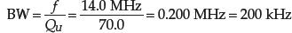
The desired bandwidth, 400 kHz, requires a loaded circuit Q of:
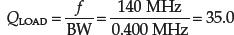
Since the desired Q is half the original value, halving the resonant impedance or parallel-resistance value of the circuit will do the trick. The present impedance of the circuit is:
Z = QUXL = 70 × 350 Ω = 24,500 Ω
The desired impedance is:
Z = QUXL = 35.0 × 350 Ω = 12,250 Ω
or half the present impedance.
A parallel resistor of 24,500 Ω will produce the required reduction in Q as bandwidth increases. In real design situations, things are a bit more complex—one must consider factors such as shape of the bandpass curve.
2.31 Lecture on Decibels
In electronics, often you will encounter situations where you will need to compare the relative amplitudes or the relative powers between two signals. For example, if an amplifier has an output voltage that is 10 times the input voltage, you can set up a ratio:
Vout/Vin = 10 VAC/1 VAC = 10
and give the ratio a special name—called gain. If you have a device whose output voltage is 10 times smaller than the input voltage, the gain ratio will be less than 1:
Vout/Vin = 1 VAC/10 VAC = 0.10
In this case, you call the ratio the attenuation.
Using ratios to make comparisons between two signals or powers is done all the time—not only in electronics. However, there are times when the range over which the ratio of amplitudes between two signals or the ratio of powers between two signals becomes inconveniently large. For example, if you consider the range over which the human ear can perceive different levels of sound intensity (average power per area of air wave), you would find that this range is very large, from about 10−12 to 1 W/m2. Attempting to plot a graph of sound intensity versus, say, the distance between your ear and the speaker, would be difficult, especially if you are plotting a number of points at different ends of the scale—the resolution gets nasty. You can use special log paper to automatically correct this problem, or you can stick to normal linear graph paper by first “shrinking” your values logarithmically. For this we use decibels.
To start off on the right foot, a bel is defined as the logarithm of a power ratio. It gives us a way to compare power levels with each other and with some reference power. The bel is defined as:
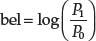
(2.88)
where P0 is the reference power and P1 is the power you are comparing with the reference power.
In electronics, the bel is often used to compare electrical power levels; however, what’s more common in electronics and elsewhere is to use decibels, abbreviated dB. A decibel is 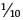 of a bel (similar to a millimeter being of a centimeter). It takes 10 decibels to make 1 bel. So in light of this, we can compare power levels in terms of decibels:
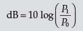
(2.89) Decibels in terms of power
Example: Express the gain of an amplifier (output power divided by input power) in terms of decibels, if the amplifier takes a 1-W signal and boosts it up to a 50-W signal.
Answer: Let P0 represent the 1-W reference power, and let P1 be the compared power:
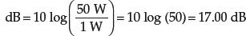
The amplifier in this example has a gain of nearly 17.00 dB (17 decibels).
Sometimes when comparing signal levels in an electronic circuit, we know the voltage or current of the signal, but not the power. Though it’s possible to calculate the power, given the circuit impedance, we take a shortcut by simply plugging ac Ohm’s law into the powers in the decibel expression. Recall that P = V2/Z = I2Z. Now, this holds true only as long as the impedance of the circuit doesn’t change when the voltage or current changes. As long as the impedance remains the same, we get a comparison of voltage signals and current signals in terms of decibels:
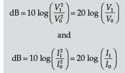
(2.90) Decibels in terms of voltage and current levels
(In the expressions above we used the laws of logarithms to remove square terms. For example:
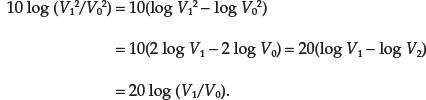
Notice that the impedance terms cancel and the final result is a factor of 2 greater—a result of the square terms in the log being pushed out (see law of logarithms). The power and voltage and current expressions are all fundamentally the same—they are all based on the ratio of powers.
There are several power ratios you should learn to recognize and be able to associate with the corresponding decibel representations.
For example, when doubling power, the final power is always 2 times the initial (or reference) power—it doesn’t make a difference if you are going from 1 to 2 W, 40 to 80 W, or 500 to 1000 W, the ratio is always 2. In decibels, a power ratio of 2 is represented as:
dB = 10 log (2) = 3.01 dB
There is a 3.01-dB gain if the output power is twice the input power. Usually, people don’t care about the .01 fraction and simply refer to the power doubling as a 3-dB increase in power.
When the power is cut in half, the ratio is always 0.5 or 1/2. Again, it doesn’t matter if you’re going from 1000 to 500 W, 80 to 40 W, or 2 to 1 W, the ratio is still 0.5. In decibels, a power ratio of 0.5 is represented as:
dB = 10 log (0.5) = −3.01 dB
A negative sign indicates a decrease in power. Again, people usually ignore the .01 fraction and simply refer to the power being cut in half as a −3-dB change in power or, more logically, a 3-dB decrease in power (the term “decrease” eliminates the need for the negative sign).
Now if you increase the power by 4, you can avoid using the decibels formula and simply associate such an increase with doubling two times: 3.01 dB + 3.01 dB = 6.02 dB or around 6 dB. Likewise, if you increase the power by 8, you, in effect, double four times, so the power ratio in decibels is 3.01 × 4 = 12.04, or around 12 dB.
The same relationship is true of power decreases. Each time you cut the power in half, there is a 3.01-dB, or around 3-dB decrease. Cutting the power by four times is akin to cutting in half twice, or 3.01 + 3.01 dB = 6.02 dB, or around a 6-dB decrease. Again, you can avoid stating “decrease” and simply say that there is a change of −6 dB.
Table 2.12 shows the relationship between several common decibel values and the power change associated with those values. The current and voltage changes are also included, but these are valid only if the impedance is the same for both values.
TABLE 2.12 Decibels and Power Ratios
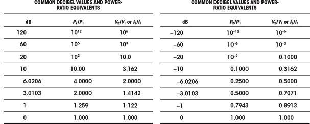
* Voltage and current ratios hold only if the impedance remains the same.
2.31.1 Alternative Decibel Representations
It is often convenient to compare a certain power level with some standard reference. For example, suppose you measured the signal coming into a receiver from an antenna and found the power to be 2 × 10−13 mW. As this signal goes through the receiver, it increases in strength until it finally produces some sound in the receiver speaker or headphones. It is convenient to describe these signal levels in terms of decibels. A common reference power is 1 mW. The decibel value of a signal compared to 1 mW is specified as “dBm” to mean decibels compared to 1 mW. In our example, the signal strength at the receiver input is:
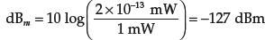
There are many other reference powers used, depending upon the circuits and power levels. If you use 1 W as the reference power, then you would specify dBW. Antenna power gains are often specified in relation to a dipole (dBd) or an isotropic radiator (dBi). Anytime you see another letter following dB, you will know that some reference power is being specified. For example, to describe the magnitudes of a voltage relative to a 1-V reference, you indicate the level in decibels by placing a “V” at the end of dB, giving units of dBV (again, impedances must stay the same). In acoustics, dB, SPL is used to describe the pressure of one signal in terms of a reference pressure of 20 µPa. The term decibel is also used in the context of sound (see Section 15.1)
2.32 Input and Output Impedance
2.32.1 Input Impedance
Input impedance ZIN is the impedance “seen” looking into the input of a circuit or device (see Fig. 2.186). Input impedance gives you an idea of how much current can be drawn into the input of a device. Because a complex circuit usually contains reactive components such as inductors and capacitors, the input impedance is frequency sensitive. Therefore, the input impedance may allow only a little current to enter at one frequency, while highly impeding current enters at another frequency. At low frequencies (less than 1 kHz) reactive components may have less influence, and the term input resistance may be used—only the real resistance is dominant. The effects of capacitance and inductance are generally more significant at high frequencies.
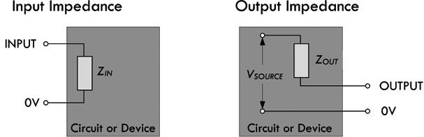
FIGURE 2.186
When the input impedance is small, a relatively large current can be drawn into the input of the device when a voltage of specific frequency is applied to the input. This typically has an effect of dropping the source voltage of the driver circuit feeding the device’s input. (This is especially true if the driver circuit has a large output impedance.) A device with low input impedance is an audio speaker (typically 4 or 8 Ω), which draws lots of current to drive the voice coil.
When the input impedance is large, on the other hand, a small current is drawn into the device when a voltage of specific frequency is applied to the input, and, hence, doesn’t cause a substantial drop in source voltage of the driver circuit feeding the input. An op amp is a device with a very large input impedance (1 to 10 MΩ); one of its inputs (there are two) will practically draw no current (in the nA range). In terms of audio, a hi-fi preamplifier that has a 1-MΩ radio input, a 500-kΩ CD input, and a 100-kΩ tap input all have high impedance input due to the preamp being a voltage amplifier not a current amplifier—something we will discuss later.
As a general rule of thumb, in terms of transmitting a signal, the input impedance of a device should be greater than the output impedance of the circuit supplying the signal to the input. Generally, the value should be 10 times as great to ensure that the input will not overload the source of the signal and reduce the strength by a substantial amount. In terms of calculations and such, the input impedance is by definition equal to:
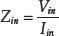
For example, Figure 2.187 shows how to determine what the input impedance is for two resistor circuits. Notice that in example 2, when a load is attached to the output, the input impedance must be recalculated, taking R2 and Rload in parallel.
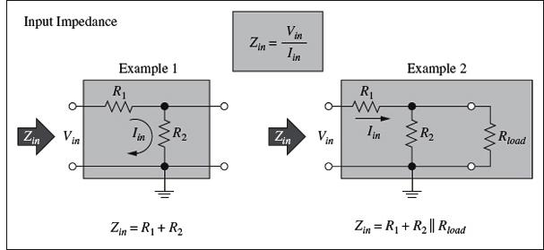
FIGURE 2.187
In Sec. 2.33.1, which covers filter circuits, you’ll see how the input impedance becomes dependent on frequency.
2.32.2 Output Impedance
Output impedance ZOUT refers to the impedance looking back into the output of a device. The output of any circuit or device is equivalent to an output impedance ZOUT in series with an ideal voltage source VSOURCE. Figure 2.186 shows the equivalent circuit; it represents the combined effect of all the voltage sources and the effective total impedance (resistances, capacitance, and inductance) connected to the output side of the circuit. You can think of the equivalent circuit as a Thevenin equivalent circuit, in which case it should be clear that the VSOURCE present in Fig. 2.186 isn’t necessarily the actual supply voltage of the circuit but the Thevenin equivalent voltage. As with input impedance, output impedance can be frequency dependent. The term output resistance is used in cases where there is little reactance within the circuit, or when the frequency of operation is low (say, less than 1 kHz) and reactive effects are of little consequence; the effects of capacitance and inductance are generally most significant at high frequencies.
When the output impedance is small, a relatively large output current can be drawn from the device’s output without significant drop in output voltage. A source with an output impedance much lower than the input impedance of a load to which it is attached will suffer little voltage loss driving current through its output impedance. For example, a lab dc power supply can be viewed as an ideal voltage source in series with a small internal resistance. A decent supply will have an output impedance in the milliohm (mΩ) range, meaning it can supply considerable current to a load without much drop in supply voltage. A battery typically has a higher internal resistance and tends to suffer a more substantial drop in supply voltage as the current demands increase. In general, a small output impedance (or resistance) is considered a good thing, since it means that little power is lost to resistive heating in the impedance and a larger current can be sourced. Op amps, which, we saw, have large input impedance and tend to have low output impedance.
When the output impedance is large, on the other hand, a relatively small output current can be drawn from the output of a device before the voltage at the output drops substantially. If a source with a large output impedance attempts to drive a load that has a much smaller input impedance, only a small portion appears across the load; most is lost driving the output current through the output impedance.
Again, the rule of thumb for efficient signal transfer is to have an output impedance that is at least that of the load’s input impedance to which it is attached.
In terms of calculations, the output impedance of a circuit is simply its Thevenin equivalent resistance Rth. The output impedance is sometimes called the source impedance. In terms of determining the output impedance in circuit analysis, it amounts to “killing” the source (shorting it) and finding the equivalent impedance between the output terminals—the Thevenin impedance.
For example, in Figure 2.188, to determine the output impedance of this circuit, we effectively find the Thevinin resistance by “shorting the source” and removing the load, and determining the impedance between the output terminals. In this case, the output impedance is simply R1 and R2 in parallel.
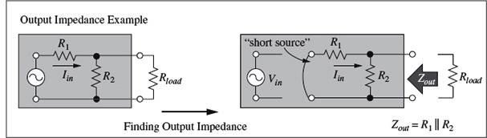
FIGURE 2.188
In Sec. 2.3.1, when we cover filter circuits, you’ll see how the output impedance becomes dependent on frequency.
2.33 Two-Port Networks and Filters
2.33.1 Filters
By combining resistors, capacitors, and inductors in special ways, you can design networks that are capable of passing certain frequencies of signals while rejecting others. This section examines four basic kinds of filters: low-pass, high-pass, bandpass, and notch filters.
Low-Pass Filters
The simple RC filter shown in Fig. 2.189 acts as a low-pass filter—it passes low frequencies but rejects high frequencies.
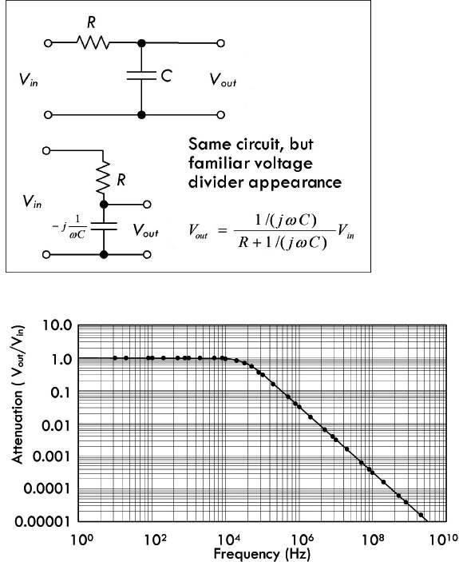
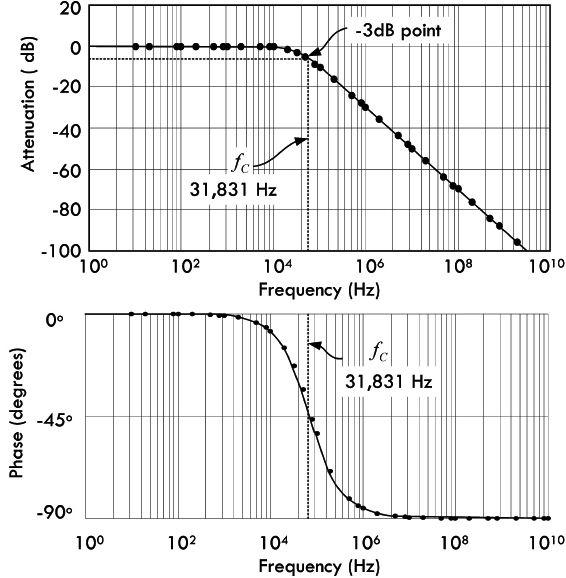
FIGURE 2.189
Example: To figure out how this network works, we find the transfer function. We begin by using the voltage divider to find Vout in terms of Vin, and consider there is no load (open output or RL = ∞):
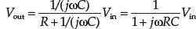
The transfer function is then found by rearranging the equation:
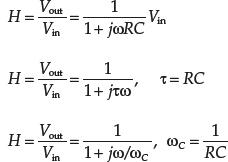
The magnitude and phase of H are:
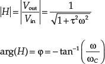
Here, τ is called the time constant, and ωC is called the angular cutoff frequency of the circuit—related to the standard cutoff frequency by ωC = 2πfC. The cutoff frequency represents the frequency at which the output voltage is attenuated by a factor of 1/ , the equivalent of half power. The cutoff frequency in this example is:
, the equivalent of half power. The cutoff frequency in this example is:
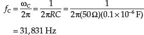
Intuitively, we imagine that when the input voltage is very low in frequency, the capacitor’s reactance is high, so it draws little current, thus keeping the output amplitude near the input amplitude. However, as the frequency of the input signal increases, the capacitor’s reactance decreases and the capacitor draws more current, which in turn causes the output voltage to drop. Figure 2.189 shows attenuation versus frequency graphs—one graph expresses the attenuation in decibels.
The capacitor produces a delay, as shown in the phase plot in Fig. 2.189. At very low frequency, the output voltage follows the input—they have similar phases. As the frequency rises, the output starts lagging the input. At the cutoff frequency, the output voltage lags by 45°. As the frequency goes to infinity, the phase lag approaches 90°.
Figure 2.190 shows an RL low-pass filter that uses inductive reactance as the frequency-sensitive element instead of capacitive reactance, as was the case in the RC filter.
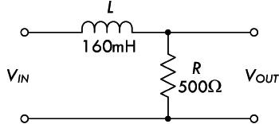
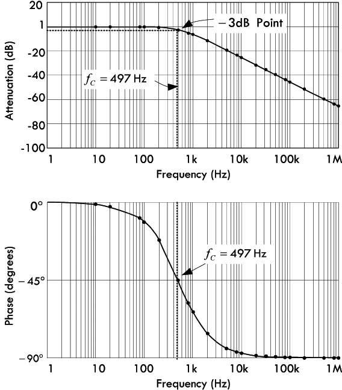
FIGURE 2.190
The input impedance can be found by definition 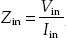, while the output impedance can be found by “killing the source” (see Fig. 2.191):
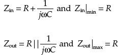
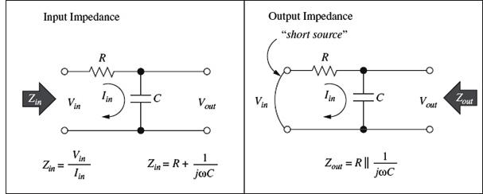
FIGURE 2.191
Now what happens when we put a finite load resistance RL on the output? Doing the voltage divider stuff and preparing the voltage transfer function, we get:
FIGURE 2.192
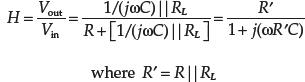
This is similar to the transfer function for the unterminated RC filter, but with resistance R being replaced by R′. Therefore:
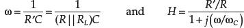
As you can see, the load has the effect of reducing the filter gain (K = R´/R < 1) and shifting the cutoff frequency to a higher frequency as (R´ = R||RL < R).
The input and output impedance with load resistance become:
FIGURE 2.193
As long as RL >> Zout or R >> Zout|max = R (condition for good voltage coupling), R´ ≈ R and the terminated RC filter will look exactly like an unterminated filter. The filter gain is one, the shift in cutoff frequency disappears, and the input and output resistance become the same as before.
Example: To find the transfer function or attenuation of the RL circuit with no load, we find Vout in terms of Vin using the voltage divider:
The magnitude and phase become:
Here, ωC is called the angular cutoff frequency of the circuit—related to the standard cutoff frequency by ωC = 2πfC. The cutoff frequency represents the frequency at which the output voltage is attenuated by a factor of 1/, the equivalent of half power. The cutoff frequency in this example is:
Intuitively we imagine that when the input voltage is very low in frequency, the inductor doesn’t have a hard time passing current to the output. However, as the frequency gets big, the inductor’s reactance increases, and the signal becomes more attenuated at the output. Figure 2.190 shows attenuation versus frequency graphs—one graph expresses the attenuation in decibels.
The inductor produces a delay, as shown in the phase plot in Fig. 2.190. At very low frequency, the output voltage follows the input—they have similar phases. As the frequency rises, the output starts lagging the input. At the cutoff frequency, the output voltage lags by 45°. As the frequency goes to infinity, the phase lag approaches 90°.
The input impedance can be found using the definition of the input impedance:
The value of the input impedance depends on the frequency ω. For good voltage coupling, the input impedance of this filter should be much larger than the output impedance of the previous stage. The minimum value of Zin is an important number, and its value is minimum when the impedance of the inductor is zero (ω → 0):
The output impedance can be found by sorting the source and finding the equivalent impedance between output terminals:
where the source resistance is ignored. The output impedance also depends on the frequency ω. For good voltage coupling, the output impedance of this filter should be much smaller than the input impedance of the next stage. The maximum value of Zout is also an important number, and it is maximum when the impedance of the inductor is infinity (ω → ∞):
When the RL low-pass filter is terminated with a load resistance RL, the voltage transfer function changes to:
The input impedance becomes:
The output impedance becomes:
The effect of the load is to shift the cutoff frequency to a lower value. Filter gain is not affected. Again, for RL >> Zout or RL >> Zout|max = R (condition for good voltage coupling), the shift in cutoff frequency disappears, and the filter will look exactly like an unterminated filter.
High-Pass Filters
Example: To figure out how this network works, we find the transfer function by using the voltage divider equation and solving in terms of Vout and Vin:
or
The magnitude and phase of H are:
Here τ is called the time constant and ωC is called the angular cutoff frequency of the circuit—related to the standard cutoff frequency by ωC = 2πfC. The cutoff frequency represents the frequency at which the output voltage is attenuated by a factor of 1/, the equivalent of half power. The cutoff frequency in this example is:
Intuitively, we imagine that when the input voltage is very low in frequency, the capacitor’s reactance is very high, and hardly any signal is passed to the output. However, as the frequency rises, the capacitor’s reactance decreases, and there is little attenuation at the output. Figure 2.194 shows attenuation versus frequency graphs—one graph expresses the attenuation in decibels.
FIGURE 2.194
In terms of phase, at very low frequency the output leads the input in phase by 90°. As the frequency rises to the cutoff frequency, the output leads by 45°. When the frequency goes toward infinity, the phase approaches 0, the point where the capacitor acts like a short.
Input and output impedances of this filter can be found in a way similar to finding these impedances for low-pass filters:
With a terminated load resistance, the voltage transfer function becomes:
This is similar to the transfer function for the unterminated RC filter, but with resistance R being replaced by R′:
The load has the effect of shifting the cutoff frequency to a higher frequency (R′ = R||RL < R).
The input and output impedances are:
As long as RL >> Zout or RL >> Zout|max = R (condition for good voltage coupling), R´ ≈ R and the terminated RC filter will look like an unterminated filter. The shift in cutoff frequency disappears, and input and output resistance become the same as before.
RL High-Pass Filter
Figure 2.195 shows an RL high-pass filter that uses inductive reactance as the frequency-sensitive element instead of capacitive reactance, as was the case in the RC filter.
FIGURE 2.195
Example: To find the transfer function or attenuation of the RL circuit, we again use the voltage divider equation and solve for the transfer function or attenuation of the RL circuit in terms of Vout and Vin:
or
The magnitude and phase of H are:
Here ωC is called the angular cutoff frequency of the circuit—related to the standard cutoff frequency by ωC = 2πfC. The cutoff frequency represents the frequency at which the output voltage is attenuated by a factor of 1, the equivalent of half power. The cutoff frequency in this example is:
Intuitively, we imagine that when the input voltage is very low in frequency, the inductor’s reactance is very low, so most of the current is diverted to ground—the signal is greatly attenuated at the output. However, as the frequency rises, the inductor’s reactance increases and less current is passed to ground—the attenuation decreases. Figure 2.195 shows attenuation versus frequency graphs—one graph expresses the attenuation in decibels.
In terms of phase, at very low frequency the output leads the input in phase by 90°. As the frequency rises to the cutoff frequency, the output leads by 45°. When the frequency goes toward infinity, the phase approaches 0, the point where the inductor acts like an open circuit.
The input and output impedances are:
For a terminated RL high-pass filter with load resistance, we do a similar calculation as we did with the RC high-pass filter, replacing the resistance with R′:
The input and output impedances are:
The load has the effect of lowering the gain, K = R′/R < 1, and it shifts the cutoff frequency to a lower value. As long as RL >> Zout or RL >> Zout|max = R (condition for good voltage coupling), R′ ≈ R and the terminated RC filter will look like an unterminated filter.
The RLC bandpass filter in Fig. 2.196 acts to pass a narrow range of frequencies (band) while attenuating or rejecting all other frequencies.
FIGURE 2.196 The parallel bandpass filter shown here yields characteristics similar to those of the previous bandpass filter. However, unlike the previous filter, as you approach the resonant frequency of the tuned circuit, the LC (RL coil) section’s impedance gets large, not allowing current to be diverted away from the load. On either side of resonance, the impedance goes down, diverting current away from load.
Example: To find the transfer function or attenuation of the unloaded RLC circuit, we set up equations for Vin and Vout:
The transfer function becomes:
This is the transfer function for an unloaded output. However, now we get more realistic and have a load resistance attached to the output. In this case we must replace R with RT, which is the parallel resistance of R and RLOAD:
Placing this in the unloaded transfer function and solving for the magnitude, we get:
Plugging in all component values and setting ω = 2nf, we get:
The attenuation versus frequency graph based on this equation is shown in Fig. 2.196. (Three other families of curves are provided for loads of 4 Ω, 100 Ω, and an infinite resistance load.)
The resonant frequency, Q, bandwidth, and upper and lower cutoff frequencies are given by:
Notch Filter
The notch filter in Fig. 2.197 acts to pass a wide range of frequencies, while attenuating (rejecting) a narrow band of frequencies.
FIGURE 2.197 The notch filter shown here yields stop-band characteristics similar to those of the previous notch filter. However, unlike the previous filter, as you approach the resonant frequency of the tuned circuit, the LC (RL coil) section’s impedance gets large, not allowing current to be sent to the load. On either side of resonance, the impedance goes down, allowing current to reach load.
Example: To find the transfer function or attenuation of the unloaded RLC circuit, we set up equations for Vin and Vout:
The transfer function becomes:
This is the transfer function for an unloaded output. Now we get more realistic and have a load resistance attached to the output. However, in this case, the load resistance is so large that we can assume it draws inconsequential current, so we don’t need to place it into the equation:
The magnitude of the transfer function is:
Plugging in all component values and setting ω = 2πf, we get:
The attenuation versus frequency graph based on this equation is shown in Fig. 2.197.
The resonant frequency, Q, bandwidth, and upper and lower cutoff frequencies are given by:
2.33.2 Attenuators
Often it is desirable to attenuate a sinusoidal voltage by an amount that is independent of frequency. We can do this by using a voltage divider, since its output is independent of frequency. Figure 2.198 shows a simple voltage divider attenuator network inserted between a source and a load circuit to decrease the source signal’s magnitude before it reaches the load. As we go through this example, you will pick up additional insight into input and output impedances.
FIGURE 2.198
Example: In (a), the source has an output impedance equal to the internal resistance of the source:
Zout = RS
In (b), the attenuator network has input and output impedances of:
Zin = R1 + R2
Zout = R2
We can come up with a transfer function for this, taking the same current to flow through R2:
If you rearrange terms, you can see this is simply a voltage divider.
In (c), the load has an input impedance of:
Zin = RL
However, when we assemble the circuit, the useful input and output impedances change. Now, looking at things from the point of view of the source, as shown in (d), the source sees an input impedance of the attenuator combined with the load impedance, which is R1 in series with the parallel combination of R2 and RL:
But now, from the point of view of the load, as shown in (e), the output impedance of the attenuator and source combined is R2 in parallel with the series combination of R1 and RS:
(The input impedance to the load is still RL.)
This output impedance is equivalent to the Thevinen equivalent impedance ZTH, as shown in (f). If we substitute R1 = 100 Ω, R2 = 3300 Ω, RS = 1 Ω, and VS = 10 VAC, we get the graph shown in (f). If we set the load RL = 330 Ω, using the Thevenin circuit, we find:
Compensated Attenuator
We just saw how a voltage divider could be used to attenuate a signal in a manner that is independent of frequency. However, in practice, there is always stray capacitance in a real circuit, and eventually a frequency is reached at which the voltage divider behaves like either a low-or a high-pass filter. This problem can be overcome by using a compensated attenuator circuit, as shown in Fig. 2.199.
FIGURE 2.199
At low frequencies the circuit behaves like an ordinary resistive divider, but at high frequencies the capacitive reactance dominates, and the circuit behaves like a capacitive voltage divider. The attenuation is independent of frequency, provided that:
(2.91)
In practice, one of the capacitors is usually variable, so that the attenuator can be adjusted to compensate for any stray capacitance.
Such compensated attenuators are often used at the input of an oscilloscope to raise the input resistance and lower the input capacitance so as to make the oscilloscope into a more nearly ideal voltmeter. However, this results in a decrease in sensitivity of the scope to input voltage.
2.34 Transient Circuits
Transients within circuits remove any steady-state condition. They represent a sudden change in voltage introduced by an external agent, such as a switch being thrown or a transistor switching states. During a transient, the voltages and currents throughout the circuit readjust to a new dc value in a brief but nonnegligible time interval immediately following the transient event. The initial condition is a dc circuit; the final condition is a different dc circuit; but the interval in between—while the circuit is readjusting to the new conditions—may exhibit complex behavior. The introduction of a transient into a circuit containing reactive components usually requires solving differential equations, since the response is time dependent. The following simple example is an exception to the rule (no reactances—no differential equations), but is a good illustration of transient behavior, nevertheless. Refer to Fig. 2.200.
FIGURE 2.200
Example:
1. Initially the switch S is open. The instant it is closed (t = 0), VS is applied across R and current flows immediately, according to Ohm’s law. If the switch remains closed thereafter (t > 0), the current remains the same as it was at the instant S was closed:
2. Initially S is closed. The instant it is open (t = 0), the voltage across and the current through the resistor go to zero. The voltage and current remain zero thereafter (t > 0), until the switch is opened again.
3. Initially S is in position A (t < 0), and the voltage across R is V1, thus making the current I = V1/R. Neglecting the time delay for the switch element to move to position B, the instant S is thrown to position B (t = 0), the voltage immediately changes and the voltage across R is V2, thus making I = V2/R.
The preceding example may have seemed like child’s play, but there is an important thing to notice from it. Just before the transient event of switching, the voltage across and the current through the resistor were both zero (or a constant value). Immediately after the switching event, the voltage and current jumped to new levels instantaneously. The resistor’s natural response after the event was time independent as indicated by Ohm’s law, V = IR. In other words, under a forced response (source is now in the picture), the resistor voltage can change instantly to a new steady state; under a forced response, the resistor current can change instantly to a new steady state.
When we consider capacitors and inductors, a forced response (applying or removing source influence) does not result in voltages and currents instantly jumping to a new steady state. Instead, there is a natural response after the forced response where the voltage and currents vary with time. With the help of Kirchhoff’s laws, transient circuits can be modeled; the resulting differential equations take into account transient events by applying initial conditions. The following two examples, which were actually covered earlier in the capacitor and inductor sections, show what happens when voltage is suddenly applied to an RL and an RC circuit.
Example: The circuit in Fig. 2.201 can be modeled using Kirchhoff’s voltage equation:
FIGURE 2.201
This is a first-order nonhomogeneous differential equation. To solve this equation, we separate the variables and integrate:
The solution of integration:
Using the initial conditions t(0) = 0, I(0) = 0, we can determine the constant of integration:
Substituting this back into the solution, we get:
Using the component values shown in Fig. 2.201, this equation becomes:
Once the current is known, the voltage across the resistor and inductor can be easily determined:
The graph in Fig. 2.201 shows how these voltages change with time. The section on inductors explains some important details of the RL circuit not mentioned here and also explains how the RL deenergizing circuit works.
Example: The circuit in Fig. 2.202 can be modeled using Kirchhoff’s voltage equation:
FIGURE 2.202
The first step in solving such an equation is to eliminate the integral by differentiating each term:
This is an example of a linear first-order homogeneous differential equation. It is linear because the unknown appears only once to the first power in each term. It is first-order because the highest derivative is the first, and it is homogeneous because the right-hand side, which would contain any terms not dependent on the unknown I, is zero. The solution to all linear first-order homogeneous differential equations is of the form:
I = I0eαt
where the constant α is determined by substituting the solution back into the differential equation and solving the resulting algebraic equation:
In this case the solution is:
The constant I0 is determined from the initial condition at t = 0, at which time the voltage across the capacitor cannot change abruptly, and thus if the capacitor has zero voltage across it before the switch is closed, it will also have zero voltage immediately after the switch is closed. The capacitor initially behaves like a short circuit, and the initial current is:
Therefore, the complete solution for the transient series RC circuit for an initially discharged capacitor is:
Using the component values shown in Fig. 2.202, this equation becomes:
I = 0.001 A e−0.1t
Once the current is known, the voltage across the resistor and capacitor can be easily determined:
The graph in Fig. 2.202 shows how these voltages change with time. The section on capacitors explains some important details of the RC circuit not mentioned here and also explains how the discharging RC circuit works.
Once you’ve memorized the response equations for a charging and discharging RC as well as the equations for an energizing and a deenergizing RL circuit (see following equations), it’s often possible to incorporate these equations into transient circuits without starting from scratch and doing the differential equations.
The following example problems illustrate how this is done.
Example 1: The circuit in Fig. 2.203 was under steady state before the switch was opened. Determine the current flow I2 the instant the switch is opened, and then determine both I2 and the voltage across R2 1 ms after that.
FIGURE 2.203
Answer: Unlike a resistor’s voltage, a capacitor’s voltage cannot change instantaneously (instead, it takes time). Because of this, the instant the switch is opened, the capacitor voltage remains as it was prior to the event:
VC (0+) = VC (0−) = 24 V
where 0+ means the instant after the switch is flipped, and 0− means the instant before the switch is flipped.
The instant after the switch is opened (t = 0+), the source is no longer part of the circuit, and we are left with the capacitor and two resistors all in series. Using Kirchhoff’s law for this new circuit:
VC + VR1 + VR2 = 0
24 V + I(10 Ω + 20 Ω) = 0
I = −24 V/30 Ω = 0.800 A
This is the same current through I2 the instant the switch is opened. To determine the current 1 ms (t = 0.001 s) after the switch is opened, simply treat the circuit as an RC discharge circuit (see Eq. 2.44), taking R = R1 + R2:
The voltage across R2 at this time is:
VR2 = IR2 = (0.573 A)(20 Ω) = 11.46 V
Example 2: In the circuit in Fig. 2.204, determine the current I when the switch is opened (t = 0). Also determine the voltage across the resistor and inductor at t = 0.1 s.
Answer: When the switch is opened, the inductor voltage cannot change instantaneously, so it resembles a short, which gives rise to the forced response:
where the inductor’s resistance is in series with R.
For any time after t = 0, the natural, or source-free, response is simply a deenergizing RL circuit, where R is the combined resistance of the fixed resistor and the resistance of the inductor:
In = Ce−Rt/L = Ce−30t/5 = Ce−6t
The total current is the sum of the forced and natural responses:
I = If + In = 0.80 A + Ce−6t
The trick then is to find C by finding the current I(0+):
Thus:
I(t) = (0.8 + 1.60 e−6t) A
The voltage across the resistor and the inductor at t = 0.1 s can be found by first calculating the current at this time:
I(0.1) = (0.8 + 1.6e(−6 × 0.1) = 1.68 A
Then:
VR = IR = 1.68 A × 20 Ω = 33.6 V
VL = 24 V − VR = 24 V − 33.6 V = −9.6 V
FIGURE 2.204
Example 3: Calculate the current IL in the circuit in Fig. 2.205 at t = 0.3 s.
FIGURE 2.205
Answer: Notice that the 12-Ω resistor has no effect on the current IL. Therefore, you get a simple RL energizing circuit with RL in series with L:
So at t = 0.3 s:
IL = (3 A)(1 − e−1.3(0.3
s)) = 0.99 A
Here are some important things to notice during a forced response in regard to resistors, capacitors, and inductors:
Resistor: Under a forced response, a voltage is instantly placed across a resistor and a current immediately flows. There is no delay in voltage or current response (ideally).
Capacitor: Under a forced response, the voltage across a capacitor cannot change instantly, so at the instant a transition occurs it acts like an open circuit or constant voltage source. The voltage at instant t = 0− or t = 0+ is a constant—the voltage that was present before the event. Also, at the instant t = 0− or t = 0+ the current is zero, since no time transpires for charge to accumulate. However, after t = 0+, the capacitor voltage and current have a natural response that is a function of time.
Inductor: Under a forced response, an inductor voltage cannot change instantaneously, so it acts like a short, meaning there is no voltage across it at t = 0− or t = 0+. The current, however, at t = 0− or t = 0+ will be a constant—the value of the current prior to the transient event. However, after t = 0+, the inductor voltage and current have a natural response that is a function of time.
(Recall that t = 0− means the instant prior to the transient event, and t = 0+ is the instant immediately after the transient event.)
Sometimes determining the voltage and currents within a transient circuit is a bit tricky, and requires a different approach than we encountered in the last three examples. The following few examples provide a good illustration of this.
Example 4: In the circuit in Fig. 2.206, determine the current through the inductor and the voltage across the capacitor the instant before the switch is closed (t = 0−) and the instant after the switch is closed (t = 0+). Find IC and IL when the switch has been closed for t = 0.5 s.
FIGURE 2.206
Answer: Before the switch is closed, the capacitor acts as an open circuit, preventing current from flowing. The instant after the switch is closed, the capacitor cannot change in voltage instantaneously, so the current is still zero. The instant before and the instant after the switch is closed, the voltage across the capacitor is equal to the supply voltage. All this can be expressed by:
IL (0−) = IL (0+) = 0
VC (0−) = VC (0+) = 18 V
When the switch is closed, we have a source-free RC circuit for which:
IC = Be−t/RC = Be−t/(1.5)
At t = 0+,
IC (0+)R + VC (0+) = 18 V
So,
Plugging this back in to find A we get:
So the complete expression for IC is:
IC = (−6 A)e−t/(1.5)
At t = 0.5 s,
IC = (−6 A)e−0.5/(1.5) = −4.3 A
To find IL at t = 0.5 s, we consider an RL circuit excited by an 18-V source (forced response) plus the natural response of an RL circuit:
Example 5: State all the initial conditions for the circuit in Fig. 2.207, which is under steady state for t < 0, and the switch is opened at t = 0. Determine the current in the circuit 0.6 s after the switch is opened. What is the induced voltage in the inductor at t = 0.4 s?
FIGURE 2.207
Answer: Since before the switch is initially closed, the capacitor is shorted out, there is no voltage across it, and the current is simply equal to the supply voltage divided by the resistance of the inductor:
By Kirchhoff’s voltage law, we get the following equation for the circuit:
from which the characteristic equation is:
60 p2 + 20 p + 1 = 0
The characteristic roots are:
p = −0.46, −0.04
The complete current response is the sum of the forced and natural responses:
I = If + In = 0 + A1e−0.46t + A2e−0.04t
I(0+) = 4 implies that A1 + A2 = 4.
At t = 0,
Solving for A1 and A2 gives A1 = −0.38, A2 = 4.38. Thus:
I = −0.38e−0.46t + 4.38e−0.04t
The induced voltage in the inductor at t = 0.4 s is simply found by plugging I into the definition of voltage for an inductor:
At t = 0.4 s,
VL = 60(0.145 − 0.172) = −1.62 V
Example 6: In the circuit in Fig. 2.208, the switch is moved from 1 to 2 at t = 0. Determine I as a function of time thereafter.
FIGURE 2.208
Answer: The complete current response when the switch is thrown is the sum of the forced response and the natural response:
2.34.1 Series RLC Circuit
There’s another transient example, which is a bit heavy in the math but is a classic analog of many other phenomena found in science and engineering. See Fig. 2.209.
FIGURE 2.209
Assume the capacitor is charged to a voltage V0, and then at t = 0, the switch is closed. Kirchhoff’s voltage law for t ≥ 0:
Rewriting in the standard form gives:
This is an example of a linear second-order homogeneous differential equation. It is reasonable to guess that the solution is of the same form as for the first-order homogeneous differential equation encountered earlier:
I = I0eαt
Substituting this into the differential equation gives:
Note that a solution of the form eαt always reduces a linear homogeneous differential equation to an algebraic equation in which first derivates are replaced by α and second derivates by α2, and so forth. A linear second-order homogeneous differential equation then becomes a quadratic algebraic equation, and so on. This particular algebraic equation has the following solutions:
(2.92)
Since either value of α represents a solution to the original differential equation, the most general solution is one in which the two possible solutions are multiplied by arbitrary constants and added together:
I = I1eα1t + I2eα2t
The constants I1 and I2 must be determined from the initial conditions. An nth-order differential equation will generally have n constants that must be determined from initial conditions. In this case the constants can be evaluated from a knowledge of I(0) and dI/dt(0). Since the current in the inductor was zero for t < 0, and since it cannot change abruptly, we know that:
I(0) = 0
The initial voltage across the inductor is the same as across the capacitor, so that:
The solution for the current in the series RLC circuit is thus:
(2.93)
The solution to the preceding equation has a unique character, depending on whether the quantity under the square root in Eq. 2.92 is positive, zero, or negative. We consider these three cases.
Case 1: Overdamped
For R2 > 4L/C, the quantity under the square root is positive, and both values of α are negative with |α2| > |α1|. The solution is the sum of a slowly decaying positive term and a more rapidly decaying negative term of equal initial magnitude. The solution is sketched in Fig. 2.210. An important limiting case is the one in which R2 >> 4L/C. In that limit, the square root can be approximated as:
FIGURE 2.210
and the corresponding values of α are:
(2.94)
In this limit, the current rises very rapidly (in a time ∼L/R) to a value near V0/R and then decays very slowly back to zero. The overdamped response curve is shown in Fig. 2.210.
Case 2: Critically Damped
For R2 = 4L/C, the quantity under the square root is zero, and α1 = α2. Equation 2.93 is then zero divided by zero, which is undefined. Therefore, the method of solution outlined here fails. A more productive approach is to let
and take the limit of Eq. 2.93 as ε → 0. Then:
Using the expansion ex ≈ 1 + x, for |x| << 1, the preceding equation becomes:
(2.95)
The shape of the curve is not very different from the overdamped case, except that it approaches zero as fast as possible without overshooting the t axis and going negative. The critically damped response curve is shown in Fig. 2.211.
FIGURE 2.211
Critical damping is difficult to achieve: only a small change in R moves from this point. Small temperature change will cause that to occur. Energy transfer from C to L is now smaller than loss in R.
For R2 < 4L/C, the quantity under the square root is negative, and α can be written as:
where j =
It is useful to define another symbol, ω, which we call the angular frequency:
(2.96)
When R2 << 4L/C, the angular frequency is:
and this approximation will usually suffice for most cases of interest. With these substitutions, Eq. 2.93 becomes:
We now make use of Euler’s equation ejθ = cos θ + j sin θ to express the current as follows:
(2.97)
Notice that the solution is very different from the others, since it is oscillatory, with the oscillation amplitude decaying exponentially in time, as shown in Fig. 2.212. Although ω is referred to as the angular frequency, note that it has units of radians per second, and it is related to the usual frequency f, which has units of cycles per second or hertz ω = 2πf. The period of oscillation is T = 1/f = 2π/ω.
FIGURE 2.212
The underdamped case is very interesting. At t = 0, all the energy is stored in the capacitor. As the current increases, energy is dissipated in the resistor and stored in the inductor until one-quarter of a cycle has passed, at which time there is no energy left in the capacitor. But as time goes on, the energy in the inductor decreases and the energy in the capacitor increases until one-half cycle has elapsed, at which time all the energy except that dissipated in the resistor is back in the capacitor. The energy continues to slosh back and forth, until it is eventually all dissipated by the resistor. A series LC circuit without any resistance would oscillate forever without damping.
This type of differential equation that we have seen for a series RLC circuit appears in many areas of science and engineering. It is referred to as a damped harmonic oscillator. Shock absorbers on an automobile, for example, are part of a mechanical harmonic oscillator designed to be nearly critically damped.
2.35 Circuits with Periodic Nonsinusoidal Sources
Suppose that you are given a periodic nonsinusoidal voltage (e.g., a squarewave, triangle wave, or ramp) that is used to drive a circuit containing resistors, capacitors, and inductors. How do you analyze the circuit? The circuit is not dc, so you cannot use dc theorems on it. The circuit is not sinusoidal, so you cannot directly apply complex impedances on it. What do you do?
If all else fails, you might assume that the only way out would be to apply Kirchhoff’s laws on it. Well, before going any further, how do you mathematically represent the source voltage in the first place? That is, even if you could set up Kirchhoff’s equations and such, you still have to plug in the source voltage term. For example, how do you mathematically represent a squarewave? In reality, coming up with an expression for a periodic nonsinusoidal source is not easy. However, for the sake of argument, let’s pretend that you can come up with a mathematical representation of the waveform. If you plug this term into Kirchhoff’s laws, you would again get differential equations (you could not use complex impedance then, because things are not sinusoidal).
To solve this dilemma most efficiently, it would be good to avoid differential equations entirely and at the same time be able to use the simplistic approach of complex impedances. The only way to satisfy both these conditions is to express a nonsinusoidal wave as a superposition of sine waves. In fact, a man by the name of Fourier discovered just such a trick. He figured out that a number of sinusoidal waves of different frequencies and amplitudes could be added together in a special manner to produce a superimposed pattern of any nonsinusoidal periodic wave pattern. More technically stated, a periodic nonsinusoidal waveform can be represented as a Fourier series of sines and cosines, where the waveform is a summation over a set of discrete, harmonically related frequencies.
2.35.1 Fourier Series
A time-dependent voltage or current is either periodic or nonperiodic. Figure 2.213 shows an example of a periodic waveform with period T.
FIGURE 2.213
The wave is assumed to continue indefinitely in both the +t and the −t directions. A periodic function can be displaced by one period, and the resulting function is identical to the original function:
V(t ± T) = V(t)
A periodic waveform can be represented as a Fourier series of sines and cosines:
(2.98)
where ω0 is called the fundamental angular frequency,
(2.99)
2ω0 is called the second harmonic, and so on. The constants an and bn are determined from:
(2.100)
(2.101)
The constant term a0/2 is the average value of V(t). The superposition theorem then allows you to analyze any linear circuit having periodic sources by considering the behavior of the circuit for each of the sinusoidal components of the Fourier series. Although most of the examples that we will use have voltage or current as the dependent variable and time as the independent variable, the Fourier methods are very general and apply to any sufficiently smooth function f(t).
Using Euler’s expression, ejθ = cos θ + j sin θ, we can convert Eq. 2.98 into a general expression for a periodic waveform as the sum of complex numbers:
(2.102)
By allowing both positive and negative frequencies (n > 0 and n < 0), it is possible to choose the Cn in such a way that the summation is always a real number. The value of Cn can be determined by multiplying both sides of Eq. 2.102 by e−jmω0t, where m is an integer, and then integrating over a period. Only the term with m = n survives, and the result is:
(2.103)
Note that C−n is the complex conjugate of Cn, and so the imaginary parts of Eq. 2.102 will always cancel, and the resulting V(t) is real. The n = 0 term has a particularly simple interpretation; it is simply the average value of V(t):
(2.104)
and corresponds to the dc component of the voltage. Whether the integrals in the preceding expression are over the interval −T/2 to T/2 or some other interval such as 0 to T is purely a matter of convenience, so long as the interval is continuous and has duration T.
The following example illustrates a Fourier series of a squarewave, as depicted in Fig. 2.214.
FIGURE 2.214
To create a mathematical expression in terms of a series of complex numbers, as Eq. 2.102 requests, we first determine the constants from Eq. 2.103 by breaking the integral into two parts for which V(t) is constant:
Since ω0T = 2π, the preceding equation can be written as
With the use of equation ejθ = cos Θ + j sin Θ, the preceding equation becomes
Note that cos nπ is +1 when n is even (0,2,4, …) and −1 when n is odd (1,3,5, …), so that all the even values of Cn are zero. Any periodic function, when displaced in time by half a period, is identical to the negative of the original function:
In this case V(t) is said to have half-wave symmetry, and its Fourier series will contain only odd harmonics. The squarewave is an example of such a function. If the wave remained at +V0 and −V0 for unequal times, the half-wave symmetry would be lost, and its Fourier series would then contain even as well as odd harmonics.
In addition to its half-wave symmetry, the squarewave shown in Fig. 2.214 is an odd function, because it satisfies the relation:
V(t) = −V(−t)
This property is not a fundamental property of the wave but arises purely out of the choice of where, with respect to the wave, the time origin (t = 0) is assumed. For example, if the squarewave in Fig. 2.214 were displaced by a time of T/4, the resulting squarewave would be an even function, because it would then satisfy the relation:
V(t) = V(−t)
It’s important to note that an odd function can have no dc component, since the negative parts exactly cancel the positive parts on opposite sides of the time axis. The cosine is an even function, and the sine is an odd function. Any even function can be written as a sum of cosines (bn = 0 in Eq. 2.98), and any odd function can be written as a sum of sines (an = 0 in Eq. 2.98). Most periodic functions (such as the one in Fig. 2.209) are neither odd nor even.
The Fourier series calculation can often be simplified by adding or subtracting a constant to the value of the function, or by displacing the time origin so that the function is even or odd or so that it has half-wave symmetry.
The odd-numbered coefficients of the Fourier series representation of the squarewave are given by
and the Fourier series is
With the use of Euler’s equation and the fact that sin θ = −sin(−θ) and cos θ = cos(−θ), the preceding equation becomes
The first three terms of the preceding series (n = 1,3,5) along with their sum are plotted in Fig. 2.215. Note that the series, even with as few as three terms, is beginning to resemble the squarewave.
FIGURE 2.215
For waveforms more complicated than a squarewave, the integrals are more difficult to perform, but it is still usually easier to calculate a Fourier series for a periodic voltage than to solve a differential equation in which the same time-dependent voltage appears. Furthermore, tables of Fourier series for the most frequently encountered waveforms are available and provide a convenient shortcut for analyzing many circuits. Some common waveforms and their Fourier series are listed in Fig. 2.216.
FIGURE 2.216
Example: Squarewave RC Circuit. The following example demonstrates the use of the Fourier series to analyze a circuit with a periodic source. Here a squarewave source is connected to a simple RC circuit. Refer to Fig. 2.217.
FIGURE 2.217
Since the source is periodic, the current I(t) is also periodic with the same period, and it can be written as a Fourier series:
Each C′n is a phasor current representing one frequency component of the total current in the same way that each Cn represents a component of the phasor voltage in the previous section. The relationship between the two phasors is determined by dividing by the circuit impedance:
Substituting the value of Cn derived earlier for the squarewave gives:
for n odd. For n even, C′n is zero, since Cn is zero for even n. The corresponding current is then
With the use of Euler’s relation, the preceding current can be written as:
The voltage across the resistor and capacitor can be determined from the definitions of an ideal resistor and an ideal capacitor:
The sum of the first three terms (n = 1, n = 3, n = 5) of the Fourier series for VC(t) and VR(t) are shown in Fig. 2.217b. As n approaches infinity, the waveforms approach the real deal.
Note that circuits with squarewave sources can also be analyzed as transient circuits. In the circuit in Fig. 2.217a, during a half period (such as 0 < t < T/2) when the source voltage is constant, the voltage across the capacitor is expressed as:
VC(t) = A + Be−t/RC
The constants A and B can be determined from
The first equation results from knowing that if the source remains at +V0 forever, the capacitor would charge to voltage V0. The second equation is required to ensure that the function has half-wave symmetry. Hence,
The capacitor voltage is then:
for 0 < t < T/2. The waveform repeats itself for t > T/2 with each half cycle alternating in sign.
Nonperiodic voltages and currents can also be represented as a superposition of sine waves as with the Fourier series. However, instead of a summation over a set of discrete, harmonically related frequencies, the waveforms have a continuous spectrum of frequencies. It is possible to think of a nonperiodic function as a periodic function with an infinite period. The fundamental angular frequency, which was ω0 = 2π/T for the Fourier series, approaches zero as the period approaches infinity. In this case, to remind us that we’re now dealing with an infinitesimal quantity, we represent the angular frequency as Δω. The various harmonics within the waveform are separated by the infinitesimal Δω, so that all frequencies are present. The waveform as a summation, as was done with Fourier series, is:
where we have used the fact that ω = nω0 and TΔω = 2π. Since Δω is infinitesimal, the preceding summation can be replaced with an integral (dω = Δω):
As before, Cn is given by
However, since T is infinite, we can write
Although T is infinite, the term CnT is usually finite in value. The CnT term is referred to as the Fourier transform of V(t) and is rewritten as (ω). After integration, it is only a function of angular frequency ω. The following two equations are called a Fourier transform pair:
(2.105)
(2.106)
These two equations are symmetric. ((ω) is sometimes defined as to make the symmetry even more perfect.)
Like the coefficients of the Fourier series, the Fourier transform (ω) is generally complex, unless V(t) is an even function of time. When V(t) is an odd function of time, the Fourier transform (ω) is entirely imaginary. For this reason, when plotting a Fourier transform, it is customary to plot either the magnitude or the square of the magnitude —referred to as the power spectrum—as a function of ω.
As an example, we will calculate the Fourier transform of the square pulse shown in Fig. 2.218a and given by:
FIGURE 2.218
The magnitude is plotted as a function of ω in Fig. 2.218b. As before, most of the Fourier spectrum is a band of frequencies within about 1/τ of zero.
In practice, if we were to attach a nonperiodic pulse, such as our square pulse, to some complex circuit with total impedance Z(ω), we could determine the current as a function of time (and thus individual voltages and currents within the circuit) by first using the Fourier transform voltage for the square pulse,
and using this to find the Fourier transform of the current by dividing by the impedance:
(2.107)
Once this is found, the current as a function of time could be determined using the inverse Fourier transform:
Using the Fourier transforms for a problem like this seems incredibly difficult—try placing a simple RCL network into the impedance and solving the integrals. However, the Fourier transform, as nasty as it can get, provides the easiest method of solution for the nonperiodic problems.
In summary, analyzing a circuit by this method involves first converting to the frequency domain by calculating the Fourier transform of the sources from Eq. 2.106, then using the impedance to determine the Fourier transform of the unknown Eq. 2.107, and finally converting back to the time domain by calculating the inverse Fourier transform of the unknown from Eq. 2.105. Solving things this way, using the difficult integrals, is actually usually much easier than solving the corresponding differential equation with a time-dependent source.
Note that special devices called spectrum analyzers can display the Fourier transform of a voltage as a function of frequency.
Enough of the difficult stuff; let’s let a simulator do the thinking for us.
2.37 SPICE
SPICE is a computer program that simulates analog circuits. It was originally designed for the development of integrated circuits, from which it derives its name: Simulation Program with Integrated Circuit Emphasis, or SPICE for short.
The origin of SPICE is traced back to another circuit simulation program called CANCER (Computer Analysis of Non-Linear Circuits Excluding Radiation), developed by Ronald Rohrer, of University of California–Berkeley, along with some of his students. CANCER was able to perform dc, ac, and transient analysis, and included special linear-companion models for basic active devices like diodes (Shockley equation) and bipolar transistors (Ebers-Moll equations).
When Rohrer left Berkeley, CANCER was rewritten and renamed SPICE, released as version 1 to the public in 1972. SPICE 1 was based on nodal analysis and included revised models for bipolar transistors (using Gummel-Poon equations), as well as new models for JFET and MOSFET devices.
In 1975, SPICE 2 was introduced, with modified nodal analysis (MNA) that replaced the old nodal analysis, and now supported voltage sources and inductors. Many things were added and many alterations were made to SPICE 2. The last version of SPICE 2 to be written in FORTRAN, version SPICE 2G.6, came out in 1983.
In 1985, SPICE 3 appeared on the scene, written in the C programming language rather than FORTRAN. It included a graphical interface for viewing results and also polynomial capacitors and inductors and voltage-controlled sources, as well as models for MESFETs, lossy transmission lines, and nonideal switches. SPICE 3 also had improved semiconductor models and was designed to eliminate many convergence problems found in previous versions. From this time on, commercial versions of SPICE have appeared: HSPICE, IS_SPICE, and MICROCAP and PSPICE (MicroSim’s PC version of SPICE).
Today, there are many user-friendly simulator programs out there that use SPICE as the brains behind the analysis. These high-level simulator programs allow you to click, drag, and drop components onto a page and draw wire connections. Test instruments, such as voltmeters, power meters, oscilloscopes, and spectrum analysis, can be dragged and connected to the circuit. Almost any type of source is available as well as any type of device (passive, active, digital, etc.)—MultiSim from Electronics Workbench contains a component library of over 13,000 models. Figure 2.219 shows an example screen shot depicting the various elements that come with a simulator. Three popular commercial simulators include MicroSim, TINAPro, and CircuitMaker. There are also online simulation programs such as CircuitLab (www.circuitlab.com) that are quick and easy to use.
FIGURE 2.219 Screen shot of a simulator user interface, showing the various devices, sources, test equipment, and analysis capabilities. The simulator shown is MultiSim from Electronics Workbench.
Basic devices: Passive devices, diodes, LEDs, thyristors, transistors, analog amplifiers and comparators, TTL logic devices, CMOS logic devices, miscellaneous digital (e.g., TIL, VHDL, VERILOG HDL), mixed signal devices, indicators, RF devices, electromechanical devices, and so on.
Sources: dc and ac voltage and current sources; clock source; AM source and FM voltage and current sources; FSK source; voltage-controlled sine, square, and triangle sources as well as current-controlled ones; pulse voltage and current sources; exponential voltage and current sources; piecewise linear voltage and current sources; controlled one-shot, polynomial, and nonlinear dependent sources.
Analysis techniques: dc operating point, ac analysis, transient analysis, Fourier analysis, noise analysis, distortion analysis, dc sweep, sensitivity, parameter sweep, temperature sweep, pole zero, transfer function, worst case, Monte Carlo, trace width analysis, batched analysis, user-defined analysis, noise figure analysis, and so on.
Test equipment: Multimeter, function generator, wattmeter, oscilloscope, bode plotter, word generator, logic analyzer, logic converter, distortion analyzer, spectrum analyzer, network analyzer, and so on.
2.37.1 How SPICE Works
Here we take a look at the heart of simulators—SPICE. What are the mathematical tricks the code in SPICE uses to simulate electrical circuits described by nonlinear differential equations? At the core of the SPICE engine is a basic technique called nodal analysis. It calculates the voltage at any node, given all of the circuit resistances (or, inversely, their conductances) and the current sources. Whether the program is performing dc, ac, or transient analysis, SPICE ultimately casts its components (linear, nonlinear, and energy-storage elements) into a form where the innermost calculation is nodal analysis.
Kirchhoff discovered that the total current entering a node is equal to the total current leaving a node. Stated another way, the sum of currents in and out of a node is zero. These currents can be described by equations in terms of voltages and conductances. If you have more than one node, then you get more than one equation describing the same system (simultaneous equations). The trick then is finding the voltage at each node that satisfies all the equations simultaneously.
For example, let’s consider the simple circuit in Fig. 2.220. In this circuit there are three nodes: node 0 (which is always ground), node 1, and node 2.
FIGURE 2.220
Using Kirchhoff’s current law in the form of “the sum of current in and out of a node is zero,” we can create two equations for the two nodes 1 and 2 (0 is by default ground):
Since the mission here is to calculate the node voltages, we rewrite these equations in order to separate V1 and V2:
The trick now becomes finding values of V1 and V2 that satisfy both equations. Although we could solve one variable in terms of the other from one equation and plug it into the second equation to find the other variable, things get messy (so many R variables to deal with). Instead, we’ll take a cleaner approach—one that involves conductance G, where G = 1/R. This will make the bookkeeping easier, and it becomes especially important when the nodal number increases with complex circuits.
Writing resistors in terms of total conductance:
G11 = 1/R1 + 1/R2, G21 = −1/R2, G12 = −1/R2, G22 = 1/R2 + 1/R3.
Thus, the system of equations is transformed into:
G11V1 + G12V2 = IS
G21V1 + G22V2 = 0
Solving the second equation for V1:
we then stick this into the first equation and solve for V2:
See how much cleaner the manipulations were using conductances? V2 is described by circuit conductances and IS alone. We still must find the numerical value of V2 and stick it back into the V1 equation while, in the process, calculating the numerical values of the conductances. However, we have found circuit voltages V1 and V2 that satisfy both system equations.
Although the last approach wasn’t that hard, or messy, there are times when the circuits become big and the node and device counts so large that bookkeeping terms become a nightmare. We must go a step further in coming up with a more efficient and elegant approach. What we do is use matrices.
In matrix form, the set of nodal equations is written:
Or in terms of total conductances and source currents:
(2.108)
Treating each matrix as a variable, we can rewrite the preceding equation in compact form:
(2.109)
In matrix mathematics, you can solve for a variable (almost) as you would in any other algebraic equation. Solving for v you get:
(2.110)
where G−1 is the matrix inverse of G. (1/G does not exist in the matrix world.) This equation is the central mechanism of the SPICE algorithm. Regardless of the analysis—ac, dc, or transient—all components or their effects are cast into the conductance matrix G and the node voltages are calculated by v = G−1
· i, or some equivalent method.
Substituting the component values present in the circuit in Fig. 2.218 into the conductance matrix and current matrix (we could use an Excel spreadsheet and apply formulas to keep things clean), we get:
Hence, the voltage is:
V1 = 9.9502 and V2 = 4.9751
2.37.2 Limitations of SPICE and Other Simulators
Simulation of a circuit is only as accurate as the behavior models in the SPICE devices created for it. Many simulations are based on simplified models. For more complex circuits or subtle behaviors, the simulation can be misleading or incorrect. This can mean disaster if you’re relying entirely on SPICE (or an advanced simulator based on SPICE) when developing circuits. SPICE can also be deceiving, since simulations are free of noise, crosstalk, interference, and so on—unless you incorporate these behaviors into the circuit. Also, SPICE is not the best predictor of component failures. You must know what dangers to look for and which behaviors are not modeled in your SPICE circuit. In short, SPICE is not a prototype substitute—the performance of the actual breadboard provides the final answer.
2.37.3 A Simple Simulation Example
As an example, we will look at simulating a simple RLC crossover network (which we will meet again in Chap. 15) with the free and easy-to-use online simulator CircuitLab (www.circuitlab.com).
The first step is to draw the schematic using the editing tool (see Fig. 2.221). The LRC network is responsible for separating an audio signal into two parts: a low-pass filter to drive the low-frequency woofer speaker and a high-pass filter to drive the tweeter.
FIGURE 2.221 CircuitLab schematic diagram
As well as adding the appropriate components to the design and connecting them, we have added an ac voltage source to represent the input signal and attached two labels (Tweeter and Woofer), so that we can see the results of the simulation (there will be labels next to our graph plots).
When we are ready, we can run a simulation. In this case, we are going to carry out a frequency-domain simulation so that we can determine the crossover frequency of the network. To do this, we specify V1 as being the input as well as start and end frequencies. We also specify the outputs that we wish to see plotted (see Fig. 2.222).
FIGURE 2.222 CircuitLab simulation parameters
When we click the Simulate button, CircuitLab will run the simulation and produce an output plot, as shown in Fig. 2.223.
FIGURE 2.223 CircuitLab simulation results
From Fig. 2.223, we can see that the crossover frequency where both speakers are receiving the same magnitude of signal is at around 1.6 kHz.
CircuitLab is a good starting point for understanding simulators. I strongly encourage you to try some of the sample schematics on the website and experiment with a few simulations.
Basic Electronic Circuit Components
3.1 Wires, Cables, and Connectors
Wires and cables provide low-resistance pathways for electric currents. Most electrical wires are made from copper or silver and typically are protected by an insulating coating of plastic, rubber, or lacquer. Cables consist of a number of individually insulated wires bound together to form a multiconductor transmission line. Connectors, such as plugs, jacks, and adapters, are used as mating fasteners to join wires and cable with other electrical devices.
3.1.1 Wires
A wire’s diameter is expressed in terms of a gauge number. The gauge system, as it turns out, goes against common sense. In the gauge system, as a wire’s diameter increases, the gauge number decreases. At the same time, the resistance of the wire decreases. When currents are expected to be large, smaller-gauge wires (large-diameter wires) should be used. If too much current is sent through a large-gauge wire (small-diameter wire), the wire could become hot enough to melt. Table 3.1 shows various characteristics for B&S-gauged copper wire at 20°C. For rubber-insulated wire, the allowable current should be reduced by 30 percent.
TABLE 3.1 Copper Wire Specifications (Bare and Enamel-Coated Wire)
Wire comes in solid core, stranded, or braided forms.
This wire is useful for wiring breadboards; the solid-core ends slip easily into breadboard sockets and will not fray in the process. These wires have the tendency to snap after a number of flexes.
The main conductor is comprised of a number of individual strands of copper. Stranded wire tends to be a better conductor than solid-core wire because the individual wires together comprise a greater surface area. Stranded wire will not break easily when flexed.
A braided wire is made up of a number of individual strands of wire braided together. Like stranded wires, these wires are better conductors than solid-core wires, and they will not break easily when flexed. Braided wires are frequently used as an electromagnetic shield in noise-reduction cables and also may act as a wire conductor within the cable (e.g., coaxial cable).
FIGURE 3.1
This wire is often referred to as hookup wire. It includes a tin-lead alloy to enhance solderability and is usually insulated with polyvinyl chloride (PVC), polyethylene, or Teflon. Used for hobby projects, preparing printed circuit boards, and other applications where small bare-ended wires are needed.
This wire is stranded to increase surface area for current flow. It has a high copper content for better conduction.
This wire is used for building coils and electromagnets or anything that requires a large number of loops, say, a tuning element in a radio receiver. It is built of solid-core wire and insulated by a varnish coating. Typical wire sizes run from 22 to 30 gauge.
FIGURE 3.2
3.1.2 Cables
A cable consists of a multiple number of independent conductive wires. The wires within cables may be solid core, stranded, braided, or some combination in between. Typical wire configurations within cables include the following:
FIGURE 3.3
3.1.3 Connectors
The following is a list of common plug and jack combinations used to fasten wires and cables to electrical devices. Connectors consist of plugs (male-ended) and jacks (female-ended). To join dissimilar connectors together, an adapter can be used.
This cable is made from two individually insulated conductors. Often it is used in dc or low-frequency ac applications.
This cable is composed of two interwound insulated wires. It is similar to a paired cable, but the wires are held together by a twist.
The common CAT5 cable used for Ethernet, among other things, is based on a set of four twisted pairs.
This cable is a flat two-wire line, often referred to as 300-Ω line. The line maintains an impedance of 300 Ω. It is used primarily as a transmission line between an antenna and a receiver (e.g., TV, radio). Each wire within the cable is stranded to reduce skin effects.
This cable is similar to paired cable, but the inner wires are surrounded by a metal-foil wrapping that’s connected to a ground wire. The metal foil is designed to shield the inner wires from external magnetic fields—potential forces that can create noisy signals within the inner wires.
This cable typically is used to transport high-frequency signals (e.g., radio frequencies). The cable’s geometry limits inductive and capacitive effects and also limits external magnetic interference. The center wire is made of solid-core copper or aluminium wire and acts as the hot lead. An insulative material, such as polyethylene, surrounds the center wire and acts to separate the center wire from a surrounding braided wire. The braided wire, or copper shielding, acts as the cold lead or ground lead. Characteristic impedances range from about 50 to 100 Ω.
This cable consists of two unbalanced coaxial cables in one. It is used when two signals must be transferred independently.
This cable consists of two solid wires insulated from one another by a plastic insulator. Like unbalanced coaxial cable, it too has a copper shielding to reduce noise pickup. Unlike unbalanced coaxial cable, the shielding does not act as one of the conductive paths; it only acts as a shield against external magnetic interference.
This type of cable is used in applications where many wires are needed. It tends to flex easily. It is designed to handle low-level voltages and often is found in digital systems, such as computers, to transmit parallel bits of information from one digital device to another.
This type of cable consists of a number of individually wrapped, color-coded wires. It is used when a number of signals must be sent through one cable.
Fiberoptic cable is used in the transport of electromagnetic signals, such as light. The conducting-core medium is made from a glass material surrounded by a fiberoptic cladding (a glass material with a higher index of refraction than the core). An electromagnetic signal propagates down the cable by multiple total internal reflections. It is used in direct transmission of images and illumination and as waveguides for modulated signals used in telecommunications. One cable typically consists of a number of individual fibers.
FIGURE 3.4
This is a typical home appliance connector. It comes in unpolarized and polarized forms. Both forms may come with or without a ground wire.
This is used for connecting single wires to electrical equipment. It is frequently used with testing equipment. The plug is made from a four-leafed spring tip that snaps into the jack.
This is a simple connector that uses a screw to fasten a metal spade to a terminal. A barrier strip often acts as the receiver of the spade lugs.
Crimp connectors are color-coded according to the wire size they can accommodate. They are useful as quick, friction-type connections in dc applications where connections are broken repeatedly. A crimping tool is used to fasten the wire to the connector.
Alligator connectors are used primarily as temporary test leads.
These connectors accept shielded braid, but they are larger in size. They come in two-or three-element types and have a barrel that is 1¼ in (31.8 mm) long. They are used as connectors in microphone cables and for other low-voltage, low-current applications.
3.5 mm and even 2.5 mm versions of these connectors are also commonly used.
Phono connectors are often referred to as RCA plugs or pin plugs. They are used primarily in audio connections.
F-type connectors are used with a variety of unbalanced coaxial cables. They are commonly used to interconnect video components. F-type connectors are either threaded or friction-fit together.
These connectors are commonly used to supply low voltage dc between 3 and 15V.
IDC connectors are often found in computers. The plug is attached to ribbon cable using v-shaped teeth that are squeezed into the cable insulation to make a solderless contact.
These are often referred to as UHF plugs. They are used with RG-59/U coaxial cable. Such connectors may be threaded or friction-fit together.
BNC connectors are used with coaxial cables. Unlike the F-type plug, BNC connectors use a twist-on bayonet-like locking mechanism. This feature allows for quick connections
T-connectors consist of two plug ends and one central jack end. They are used when a connection must be made somewhere along a coaxial cable.
These connectors are used with multiple conductor wires. They are often used for interconnecting audio and computer accessories.
Smaller versions of these connectors (mini-DIN) are also widely used.
These connectors are used as test probes. The spring-loaded hook opens and closes with the push of a button. The hook can be clamped onto wires and component leads.
D-connectors are used with ribbon cable. Each connector may have as many as 50 contacts. The connection of each individual wire to each individual plug pin or jack socket is made by sliding the wire in a hollow metal collar at the backside of each connector. The wire is then soldered into place.
FIGURE 3.5
3.1.4 Wiring and Connector Symbols
FIGURE 3.6
3.1.5 High-Frequency Effects Within Wires and Cables
Weird Behavior in Wires (Skin Effect)
When dealing with low-current dc hobby projects, wires and cables are straightforward—they act as simple conductors with essentially zero resistance. However, when you replace dc currents with very high-frequency ac currents, weird things begin to take place within wires. As you will see, these “weird things” will not allow you to treat wires as perfect conductors.
First, let’s take a look at what is going on in a wire when a dc current is flowing through it.
A wire that is connected to a dc source will cause electrons to flow through the wire in a manner similar to the way water flows through a pipe. This means that the path of any one electron essentially can be anywhere within the volume of the wire (e.g., center, middle radius, surface).
FIGURE 3.7
Now, let’s take a look at what happens when a high-frequency ac current is sent through a wire.
An ac voltage applied across a wire will cause electrons to vibrate back and forth. In the vibrating process, the electrons will generate magnetic fields. By applying some physical principles (finding the forces on every electron that result from summing up the individual magnetic forces produced by each electron), you find that electrons are pushed toward the surface of the wire. As the frequency of the applied signal increases, the electrons are pushed further away from the center and toward the surface. In the process, the center region of the wire becomes devoid of conducting electrons.
FIGURE 3.8